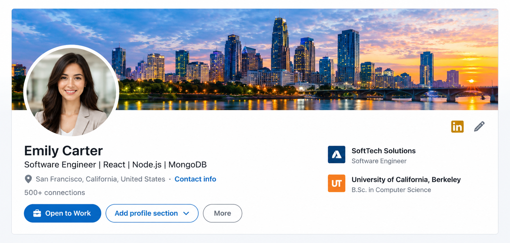

01
Executive Resume Writing
Transform your experience into a focused, achievement-driven resume that communicates your professional value.
Explore ServiceBuild a stronger professional presence with expert resume writing, LinkedIn optimization, and personalized career coaching designed around your goals.

Product leader with 8+ years of experience building digital products, leading cross-functional teams, and driving measurable business growth.

Helping brands grow through strategy, storytelling, and customer-focused marketing.


Your experience already has value. CAREERLYN helps you communicate that value clearly, professionally, and with purpose across every stage of your career.
Identify the strengths, achievements, and career direction that deserve greater visibility.
Build a consistent professional identity across your resume, LinkedIn profile, and interviews.
Present your experience in a way that supports stronger opportunities and career conversations.
From positioning your experience to strengthening your professional presence, every service is designed around where you want your career to go next.
Transform your experience into a focused, achievement-driven resume that communicates your professional value.
Explore Service
02Build a stronger professional presence with messaging, positioning, and profile content designed to attract the right opportunities.
Explore Service 03
03
Gain clarity around your next move with personalized guidance for career strategy, interviews, and professional growth.
Explore ServiceYour experience already has value. We help you present it with clarity, confidence, and the positioning needed for your next career opportunity.
Growth-focused marketing leader with 10+ years of experience building high-performing teams, brands, and customer strategies.
Identify the experience, achievements, and strengths that make you valuable in your target market.
Turn responsibilities into measurable achievements and create a professional story that stands out.
Align your resume, LinkedIn profile, and career strategy around the opportunities you want next.

Career decisions become easier when you have the right strategy, perspective, and support. CAREERLYN provides personalized coaching designed around your goals and professional direction.
Get clear on the role, industry, leadership path, or career transition you want to pursue.
Strengthen how you communicate your experience, strengths, achievements, and professional value.
Navigate interviews, career transitions, leadership opportunities, and important professional decisions.

“CAREERLYN completely changed how I presented my experience. My resume finally communicates the level of work I have actually been doing.”

“The coaching gave me a much clearer direction. I stopped applying everywhere and started targeting opportunities that actually matched my experience.”

“My LinkedIn profile and resume now tell the same professional story. I feel much more confident entering conversations with recruiters.”
Get the professional clarity, positioning, and support you need to approach your next career move with confidence.